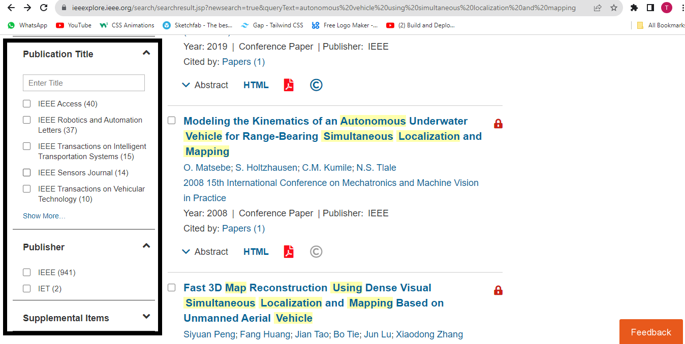
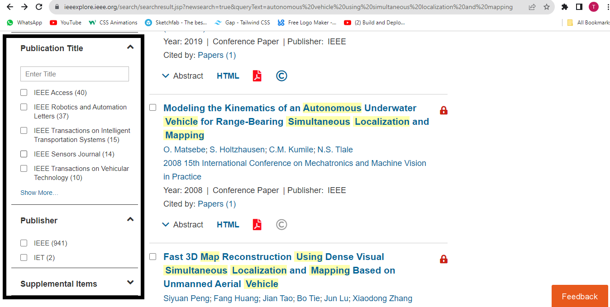

As we delve into comprehensive research, it's essential for us to accurately fine-tune our search results. This involves a strategic combination, exclusion, or exact matching of specific keywords or filters to meet our precise research needs.
Boolean searching in academic databases allows users to construct a search query using Boolean operators—AND, OR, NOT—to include or exclude terms. For example, using "AND" to combine terms ensures that search results contain all the terms, "OR" broadens the search to include any of the terms, and "NOT" excludes terms to eliminate unwanted results. This logical structuring of search terms allows for high precision. Modern academic databases often provide a user-friendly interface where you can add these conditions through drop-down menus, checkboxes, or input fields, making the process intuitive even for complex queries.
For final year computing students, Boolean searching is a powerful tool for navigating the vast and often complex landscape of academic literature. It allows for a high degree of precision in searches, which is particularly important when dealing with specialized or niche topics. This precision ensures that students can efficiently find the most relevant literature for their research, saving time and increasing the effectiveness of their academic work. Extended Academic Application: Beyond basic searches, Boolean logic can be used in systematic literature reviews, meta-analyses, and other rigorous research activities where defining the scope and boundaries of the search is critical. It helps in filtering the massive volume of available data, enabling students to concentrate on the most pertinent and authoritative sources. Moreover, this approach fosters a deeper understanding of keyword relationships and research methodologies, enhancing students' research skills and acumen.
 
